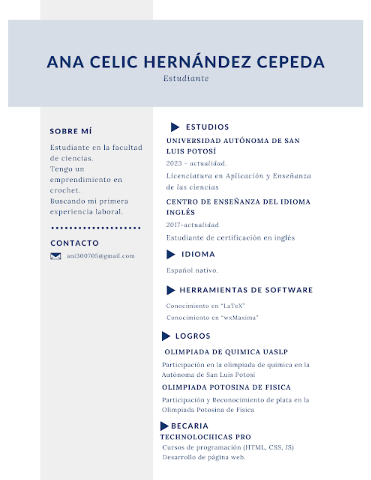

Mis proyectos recientes
Estos son algunos proyectos que he creado recientemente en mi curso de Tecnolochicas Pro...



Testimonios
Estos son algunos testimonios de mis clientes...

Ani es una profesional orientada a los resultados con gran capacidad de solución de problemas con ayuda de creatividad y compromiso constante.

Es alguien dedicada con grandes habilidades en el desarrollo web, siempre busca nuevos retos para poder superarse y llegar a ser una persona con grandes conocimientos.

Fue una excelente compañera. Dedicada, participativa, con gran interés por aprender y dispuesta a ayudar, excelentes resultados en el desarrollo de páginas web y programación, creativa y perfeccionista con los detalles de sus proyectos.